Inicio rápido de Confluent
Confluent es una plataforma de streaming de datos basada en Apache Kafka®. Esta guía rápida te ayuda a comenzar a transmitir datos mostrándote cómo usar un clúster, agregar un tópico y producir datos.
¿Por qué usar Confluent en lugar de administrar Kafka por tu cuenta?
Confluent elimina la complejidad operativa de Kafka con:
- Escalado automático y confiabilidad
- Seguridad, monitoreo y gestión de esquemas integrados
- Menor costo total de propiedad y desarrollo más rápido
La página Home de la consola
Al iniciar sesión, la página Home muestra widgets para volver a los recursos que más utilizas y para monitorear tus entornos:
| Widget | Descripción |
|---|---|
| Resumen de recursos | Muestra cuántos entornos, clústeres, tópicos, conectores, cluster links, compute pools y SQL workspaces tienes. Selecciona un tipo de recurso para ir a su lista. |
| Acción requerida | Lista los recursos que necesitan tu atención, como recursos inactivos. Selecciona View all para ver la lista completa. |
| Favoritos | Lista los recursos que marcaste como favoritos (entornos, clústeres, tópicos o conectores) para volver a ellos directamente desde Home. Para agregar un favorito, selecciona Add favorite, busca y elige el recurso. Para quitarlo, selecciona Edit y luego Remove from favorites. |
| Visitados recientemente | Lista los recursos a los que accediste más recientemente, con el tiempo transcurrido desde la visita. Selecciona View all para buscar en todo tu historial. |
| Descubrir datos | Muestra los tópicos creados recientemente en un entorno seleccionado. Selecciona Explore more para explorar tus datos en Data Portal. |
| Data health score | Muestra una puntuación basada en cuántos de tus tópicos tienen un esquema registrado, y lista los tópicos que no lo tienen. |
| Blogs | Muestra publicaciones recientes del blog de Confluent. |
img/00-home.png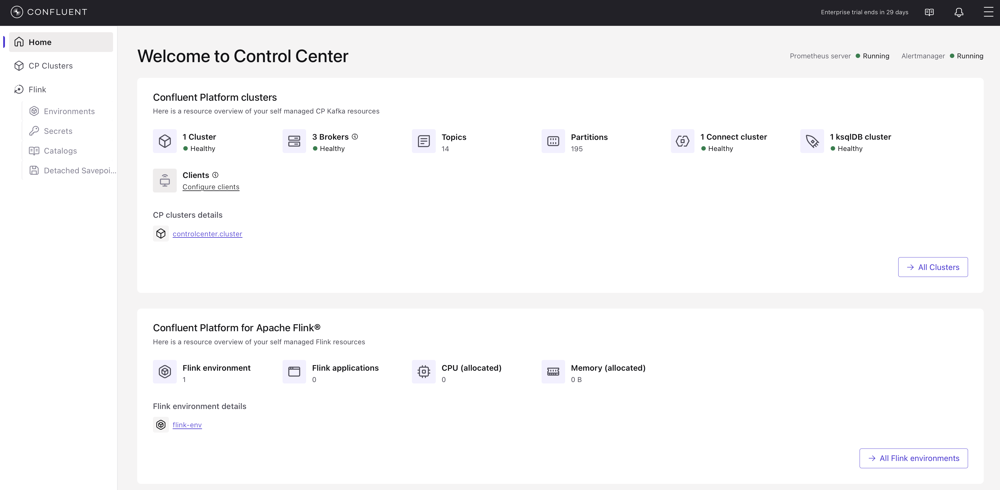
Consideraciones antes de comenzar
- Esta guía rápida te pone en marcha con Confluent usando un clúster Kafka básico.
- La primera sección muestra cómo crear tópicos, y producir y consumir datos hacia y desde el clúster.
- La segunda sección te guía en el uso de Apache Flink® para ejecutar consultas sobre los datos usando sintaxis SQL.
- Los flujos de trabajo asumen que ya cuentas con un entorno de Confluent Platform funcionando, con Kafka, Schema Registry, Connect, ksqlDB y Flink ya instalados y disponibles.
- Confluent ofrece una interfaz web, una interfaz de línea de comandos local y APIs REST para administrar tus entornos y recursos.
Sección 1: Agregar un tópico y producir datos
Esta sección utiliza el clúster Kafka ya creado y muestra cómo producir datos hacia un tópico usando la consola.
Paso 1 Navegar al clúster Kafka
El clúster Kafka ya se encuentra creado para este laboratorio. En este paso ingresas a la consola y navegas hasta él.
- Inicia sesión en la consola de Confluent desde la URL provista en el TechZone.
- En el menú de navegación, selecciona CP Clusters.
controlcenter.cluster.img/01a-navigate-to-cluster.png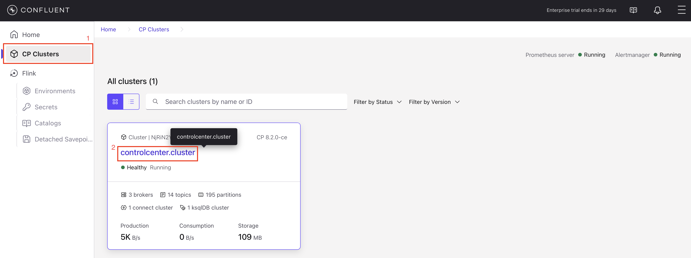
- Haz clic en el clúster
controlcenter.clusterpara abrir la página Cluster overview.
img/01b-cluster-overview.png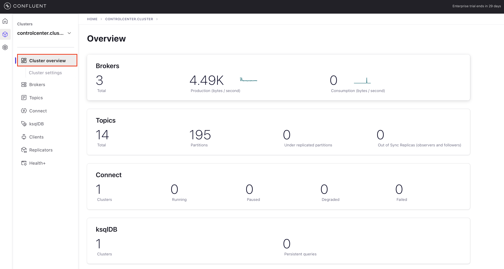
Ahora puedes configurar aplicaciones y datos en el clúster.
Paso 2 Crear un tópico Kafka
En este paso creas un tópico Kafka llamado users desde la consola. Un tópico es una unidad de organización dentro de un clúster y es, esencialmente, un log de solo escritura al final (append-only). Para más información sobre tópicos, consulta «What is Apache Kafka».
- En el menú de navegación, haz clic en Topics y luego en Add topic.
img/03-topics.png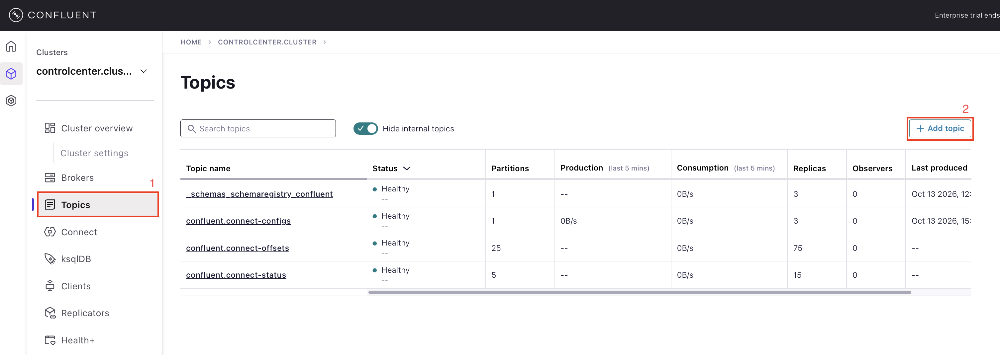
- En el campo Topic name, escribe
usersy selecciona Create with defaults.
usersCampo Topic name y botón Create with defaults.img/03b-create-topic.png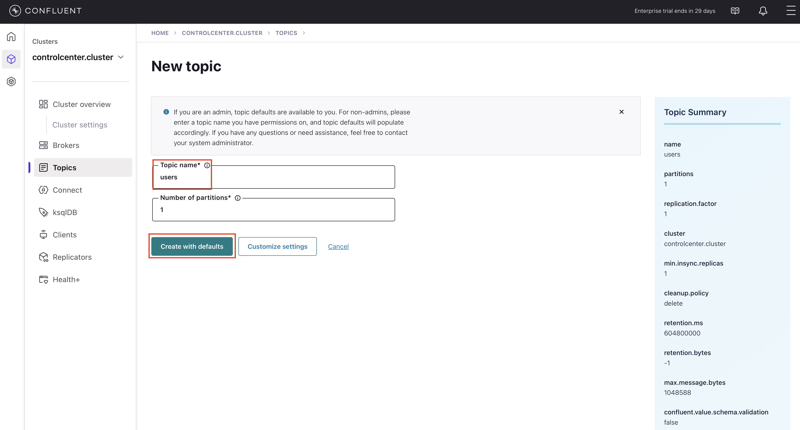
El tópico users queda creado en el clúster Kafka y disponible para productores y consumidores.
El mensaje de éxito puede sugerirte realizar una acción; continúa con el Paso 3: Registrar el esquema del tópico.
Paso 3 Registrar el esquema del tópico
Schema Registry es la base de Stream Governance. Guarda el esquema de los datos de cada tópico para mantenerlos consistentes y compatibles a medida que evolucionan las aplicaciones. En este paso registras a mano el esquema Avro del valor de los mensajes del tópico users, antes de producir datos.
- En el menú de navegación, selecciona Topics y luego el tópico
users. - En la página de detalle del tópico, haz clic en la pestaña Schema.
- Haz clic en Set a schema.
img/05-set-schema.png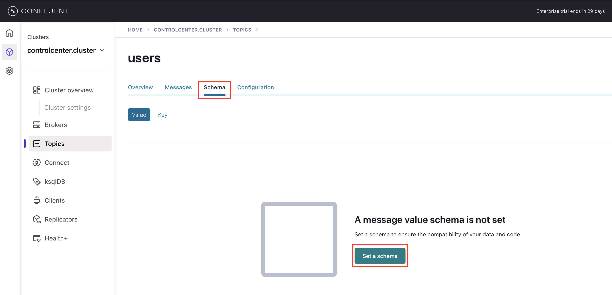
- En el editor, pega el siguiente esquema Avro y guárdalo. Los campos son los que genera la plantilla
usersdel conector Datagen:
{
"type": "record",
"name": "users",
"namespace": "ksql",
"fields": [
{"name": "registertime", "type": "long"},
{"name": "userid", "type": "string"},
{"name": "regionid", "type": "string"},
{"name": "gender", "type": "string"}
]
}
El esquema queda registrado y la pestaña Schema lista cada campo y su tipo, definiendo la estructura que acuerdan productores y consumidores.
users.img/07-schema.png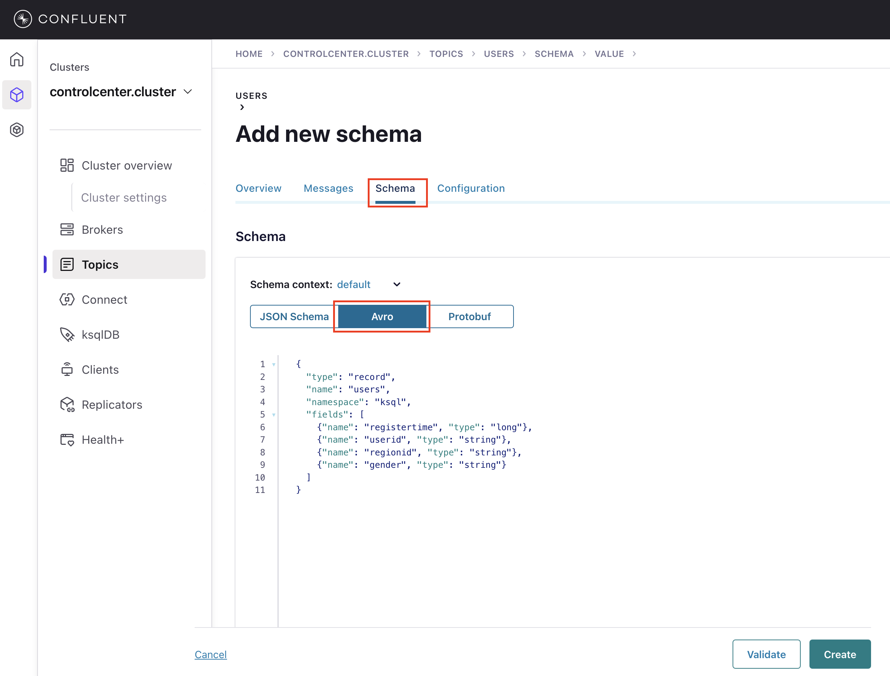
Paso 4 Crear un productor de ejemplo
Un conector es un componente enchufable que transmite datos hacia o desde Kafka. Este paso usa el conector Datagen Source, que genera datos simulados, para producir datos de ejemplo hacia tu clúster Kafka. El conector se configura para serializar los mensajes con el esquema que registraste en el paso anterior.
En Confluent Cloud los conectores se ofrecen como servicio totalmente administrado: los eliges desde el catálogo y no instalas nada. Consulta el catálogo completo en Conectores nativos de Confluent Cloud. En este laboratorio usas Connect de Confluent Platform, donde los conectores se instalan en el clúster de Connect.
- En el menú de navegación, selecciona Connect y luego haz clic en el clúster
connect.
connect.img/04a.png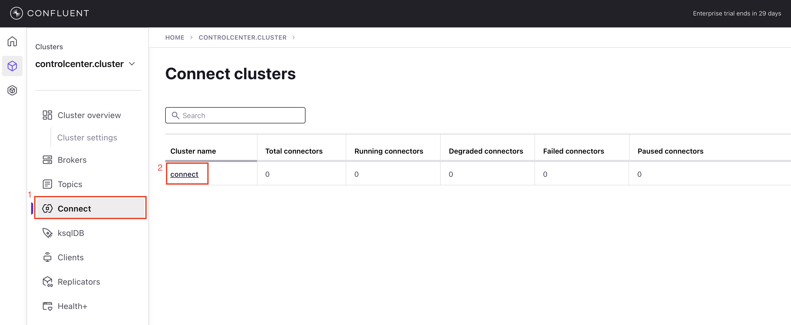
- Haz clic en Add connector.
img/04b.png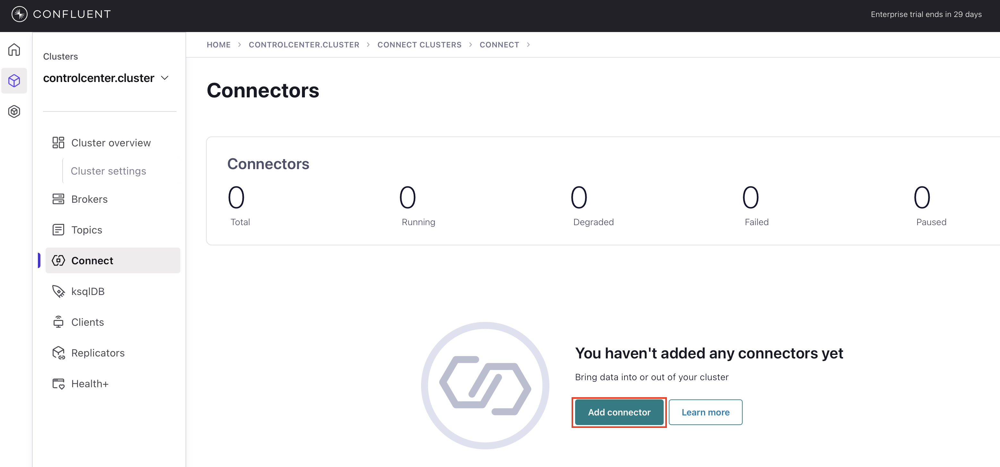
- En la página Browse aparecen los conectores disponibles, entre ellos DatagenConnector (Source). En lugar de completar el formulario campo por campo, haz clic en Upload connector config file (arriba a la derecha) y selecciona el archivo
datagen-users-connector.jsoncon la configuración de abajo.
img/04c.png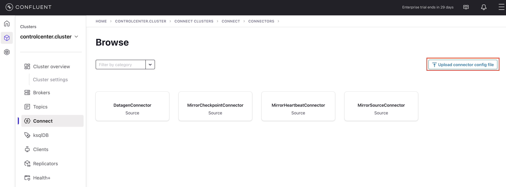
Haz clic en el botón de descarga del bloque: te pide la IP y la contraseña y descarga datagen-users-connector.json ya personalizado. También puedes copiar el contenido y editar los marcadores a mano.
{
"name": "DatagenSourceConnector_users",
"config": {
"name": "DatagenSourceConnector_users",
"connector.class": "io.confluent.kafka.connect.datagen.DatagenConnector",
"kafka.topic": "users",
"quickstart": "users",
"schema.keyfield": "userid",
"key.converter": "org.apache.kafka.connect.storage.StringConverter",
"value.converter": "io.confluent.connect.avro.AvroConverter",
"value.converter.schema.registry.url": "https://<ip>/sr/",
"value.converter.basic.auth.credentials.source": "USER_INFO",
"value.converter.basic.auth.user.info": "admin:<password>",
"value.converter.auto.register.schemas": "false",
"value.converter.use.latest.version": "true"
}
}
Si copias el contenido en lugar de usar el botón de descarga, reemplaza estos dos marcadores antes de cargar el archivo:
<ip>por la IP de tu VM (la misma que usas para entrar a Control Center).<password>por la contraseña del usuarioadminde tu entorno.
| Propiedad | Valor | Descripción |
|---|---|---|
| kafka.topic | users | Tópico de destino. |
| quickstart | users | Plantilla de datos de ejemplo incluida en Datagen. |
| schema.keyfield | userid | Campo usado como clave del mensaje. Si no se define, la clave queda nula. |
| key.converter | StringConverter | La clave se serializa como texto plano. |
| value.converter | AvroConverter | El valor se serializa en Avro usando Schema Registry. |
| auto.register.schemas | false | No registra un esquema nuevo; usa el que registraste en el Paso 3. |
| use.latest.version | true | Usa la última versión del esquema registrado para el tópico. |
- Revisa la configuración cargada y lanza el conector.
Tras lanzar el conector, se muestra la página Connectors con DatagenSourceConnector_users en la lista. Cuando su estado sea Running, el conector está produciendo datos hacia el tópico users.
DatagenSourceConnector_users.img/04d-connector.png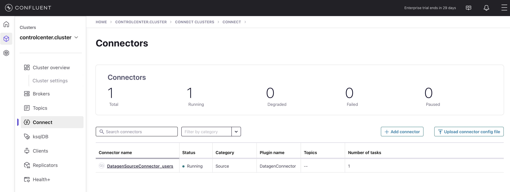
Paso 5 Ver los mensajes
Tu nuevo tópico users ya está recibiendo mensajes serializados con el esquema registrado. Usa la consola para ver los datos.
- En el menú de navegación, selecciona Topics para mostrar la lista de tópicos de tu clúster.
- Selecciona el tópico
users. - En la página de detalle del tópico
users, selecciona Messages para ver los mensajes que se están produciendo.
img/06-messages.png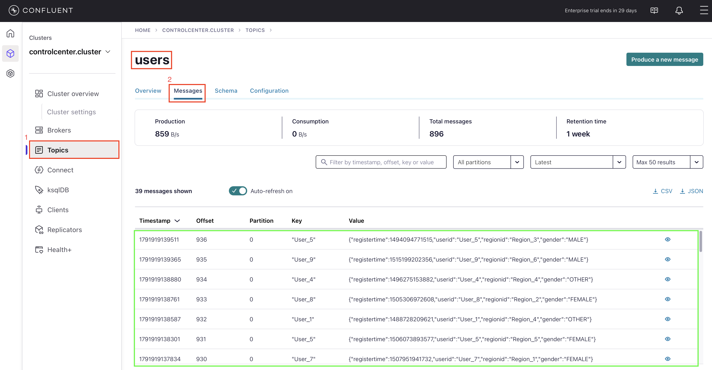
Paso 6 Inspeccionar el flujo de datos Solo Confluent Cloud
Stream Lineage es una funcionalidad de Confluent Cloud que permite rastrear el movimiento de los datos a través del clúster: muestra, en un diagrama, cómo fluyen los datos entre conectores, tópicos y otros recursos, y permite abrir cada nodo para ver su detalle.
Stream Lineage no está disponible en Confluent Platform, por lo que no puedes reproducir este paso en tu entorno. La siguiente captura, tomada en Confluent Cloud, muestra cómo se vería.
En Confluent Cloud, al abrir Stream Lineage y hacer clic en el nodo del conector DatagenSourceConnector_users, el diagrama muestra el flujo conector → tópico users. El panel de detalle indica el tipo de plugin, el estado, los bytes y mensajes producidos, y gráficos de producción total y de bytes producidos por tópico.
img/lineage-cloud.png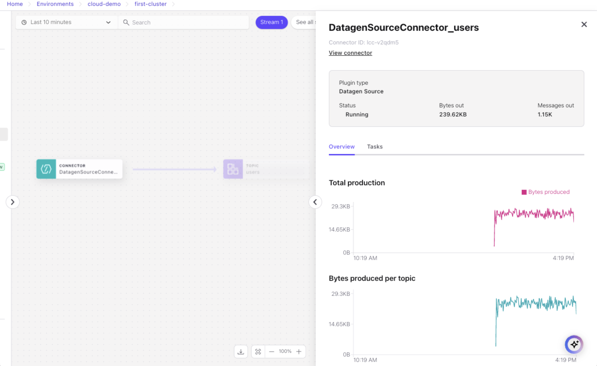
Sección 2: Consultar datos de streaming con Flink SQL
En esta sección creas un workspace de Flink y escribes consultas sobre el tópico users y otros datos de streaming. En la Sección 1 instalaste un conector Datagen que produjo estos datos hacia el tópico users de tu clúster.
Paso 1 Crear un workspace de Flink
Un workspace de Flink es un editor SQL interactivo para escribir y ejecutar consultas sobre datos de streaming. Crea uno nuevo para comenzar.
- Navega a la página SQL Workspaces: en el menú de navegación, haz clic en Stream processing.
- En el desplegable, selecciona el entorno donde creaste el tópico
usersy el conector Datagen Source. - Haz clic en Create workspace.
Para experimentar con flujos de datos de ejemplo provistos por Flink, haz clic en Try example para abrir un workspace con consultas de ejemplo que puedes ejecutar de inmediato.
Se abre un nuevo workspace con una consulta de ejemplo en el editor de código (o celda).
img/10-flink-workspace.png
En segundo plano, Flink crea un compute pool, que representa los recursos de cómputo usados para ejecutar tus sentencias SQL.
El aprovisionamiento del compute pool puede tardar uno o dos minutos. El estado se muestra en la parte superior derecha del workspace.
Paso 2 Ejecutar sentencias Flink SQL
El compute pool está listo para ejecutar consultas cuando su estado cambia de Provisioning a Running.
- Haz clic en Run para enviar la consulta de ejemplo.
La sentencia de ejemplo se envía y se muestra información sobre ella, incluyendo su estado y un identificador único. Haz clic en el enlace del nombre de la sentencia para abrir su vista de detalle, que muestra el estado y otra información. Haz clic en X para cerrar la vista de detalle.
Tras un período de inicialización, los resultados de la consulta se muestran debajo de la celda. La salida debería ser similar a:
EXPR$0 0 1 2
- Borra la consulta anterior de la celda y ejecuta la siguiente consulta para inspeccionar el stream
users.
Flink registra tablas automáticamente sobre tus tópicos Kafka, y tu consulta se ejecuta sobre la tabla users con los datos de streaming del tópico subyacente.
SELECT * FROM users;
La salida debería ser similar a:
key registertime userid regionid gender x'557365725f34' 1502088104187 User_4 Region_1 MALE x'557365725f32' 1500243991207 User_2 Region_9 FEMALE x'557365725f32' 1497969328414 User_2 Region_9 OTHER ...
- Haz clic en Stop para finalizar la consulta.
Los datos siguen fluyendo desde el conector Datagen hacia la tabla users aunque la consulta SELECT esté detenida.
SELECT * FROM users;Filas de la tabla users en el workspace.img/11-flink-select-users.png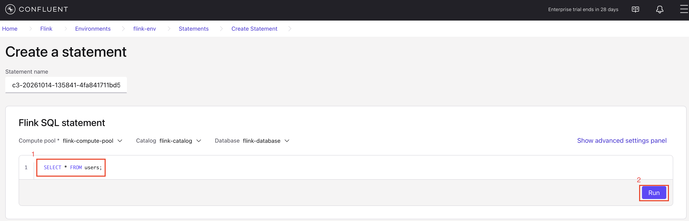
Paso 3 Enmascarar un campo
Con un compute pool de Flink en ejecución, puedes correr consultas SQL sobre tus datos de streaming.
En este paso ejecutas una sentencia Flink SQL para ocultar información personal en el stream users y publicar los datos depurados en un nuevo tópico Kafka llamado users_mask.
- Ejecuta la siguiente sentencia para crear una nueva tabla Flink basada en la tabla
users.
CREATE TABLE users_mask LIKE users;
- Cuando el estado de la sentencia anterior sea Completed, ejecuta la siguiente sentencia para inspeccionar el esquema de la tabla
users_mask.
DESCRIBE users_mask;
La salida debería ser similar a:
+--------------+-----------+----------+------------+ | Column Name | Data Type | Nullable | Extras | +--------------+-----------+----------+------------+ | key | BYTES | NULL | BUCKET KEY | | registertime | BIGINT | NULL | | | userid | STRING | NULL | | | regionid | STRING | NULL | | | gender | STRING | NULL | | +--------------+-----------+----------+------------+
- Ejecuta la siguiente sentencia para iniciar una consulta persistente que usa la función
REGEXP_REPLACEde Flink para enmascarar el valor del campogendery enviar los resultados a la tablausers_mask.
INSERT INTO users_mask SELECT `key`, registertime, userid, regionid, REGEXP_REPLACE(gender, '(\w)', '*') as gender FROM users;
La sentencia INSERT INTO ... SELECT se ejecuta de forma continua hasta que la detengas manualmente.
- Haz clic en el ícono Add new cell para crear una nueva celda y ejecuta la siguiente sentencia para inspeccionar las filas de la tabla
users_mask.
SELECT * FROM users_mask;
La salida debería ser similar a:
key registertime userid regionid gender x'557365725f34' 1488737391835 User_4 Region_5 ***** x'557365725f34' 1499070045309 User_4 Region_5 ***** x'557365725f32' 1505447077187 User_2 Region_7 ***** x'557365725f34' 1505592707164 User_4 Region_2 ***** ...
- Haz clic en Stop para finalizar la sentencia SELECT.
La sentencia INSERT INTO que iniciaste antes continúa enviando datos al tópico users_mask.
SELECT * FROM users_mask;Campo gender enmascarado con asteriscos.img/12-flink-users-mask.png
Paso 4 Ver el Stream Lineage
Tus sentencias Flink SQL son recursos al igual que los tópicos y conectores, por lo que puedes verlas en Stream Lineage.
- En tu workspace, abre el navegador de catálogo y expande tu entorno, clúster y Tables para encontrar el tópico
users_mask. - Pasa el cursor sobre el tópico
users_masky haz clic en View topic details.
users_mask.img/13-flink-navigation.png
- En el panel de detalle del tópico, bajo Lineage, haz clic en View full lineage.
img/14-stream-lineage-flink.png
- Pasa el cursor sobre los nodos del diagrama de Stream Lineage para ver detalles del flujo de datos.
Paso 5 Eliminar recursos
Al terminar el laboratorio, elimina los recursos que creaste para evitar cargos inesperados en tu cuenta.
Eliminar la consulta persistente
- Navega a la página de detalle de tu entorno y haz clic en Flink.
- En la lista de sentencias, busca la que tenga estado Running.
- Marca la casilla de la sentencia, haz clic en Actions y selecciona Delete statement.
- En el diálogo Confirm statement deletion, escribe
DELETEy haz clic en Confirm.
Eliminar el conector
- En el menú de navegación, selecciona Connect y haz clic en el clúster
connect. - Haz clic en
DatagenSourceConnector_usersy elige la pestaña Settings. - Haz clic en Delete connector, ingresa el nombre del conector (
DatagenSourceConnector_users) y haz clic en Confirm.
Eliminar los tópicos
- En el menú de navegación, haz clic en Topics, selecciona el tópico
usersy elige la pestaña Settings. - Haz clic en Delete topic, ingresa el nombre del tópico (
users) y haz clic en Continue. - Repite estos pasos con el tópico
users_mask.